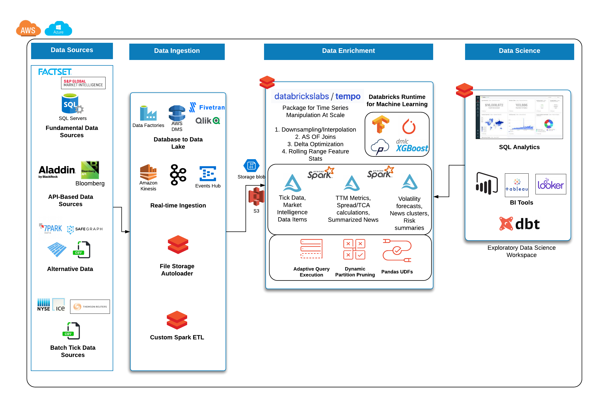

User Guide#
Installing#
tempo can be installed in Python with pip
$ python -m pip install dbl-tempo
or for Scala with scala’s simple build tool (sbt)
Once the jar is created (via the following instructions), upload the jar to Databricks for use in a notebook or job:
$ cd scala/tempo
$ sbt package
Starting Point: TSDFs#
The entry point into all features for time series analysis in tempo is a TSDF object which wraps the Spark data frame. At a high level, a TSDF contains a data frame which contains many smaller time series, one per partition key. In order to create a TSDF object, a distinguished timestamp column much be provided in order for sorting purposes for public methods.
Optionally, a sequence number and partition columns can be provided as the assumptive columns on which to create new features from. Below are the public methods available for TSDF transformation and enrichment.
Sample Reference Architecture for Capital Markets#
Quickstart - Python#
Data source is UCI public accelerometer data available at this URL

Read in Data#
Reading data into a tempo tsdf is very easy. It provides a simple api to wrap a normal Spark dataframe with the
time column and the optional partition column specification.
from pyspark.sql.functions import *
phone_accel_df = spark.read.format("csv").option("header", "true").load("dbfs:/home/tempo/Phones_accelerometer").withColumn("event_ts", (col("Arrival_Time").cast("double")/1000).cast("timestamp")).withColumn("x", col("x").cast("double")).withColumn("y", col("y").cast("double")).withColumn("z", col("z").cast("double")).withColumn("event_ts_dbl", col("event_ts").cast("double"))
from tempo import *
phone_accel_tsdf = TSDF(phone_accel_df, ts_col="event_ts", partition_cols = ["User"])
display(phone_accel_tsdf)
Resample and Visualize#
Sample usage#
Possible values for frequency include patterns such as 1 minute, 4 hours, 2 days or simply sec, min, day. For the accepted functions to aggregate data, options are ‘floor’, ‘ceil’, ‘min’, ‘max’, ‘mean’.
Note
Custom functions will be available in a future release.
Tip
You can upsample any missing values by using an option in the resample interface (fill = True)
# ts_col = timestamp column on which to sort fact and source table
# partition_cols - columns to use for partitioning the TSDF into more granular time series for windowing and sorting
resampled_sdf = phone_accel_tsdf.resample(freq='min', func='floor')
resampled_pdf = resampled_sdf.df.filter(col('event_ts').cast("date") == "2015-02-23").toPandas()
import plotly.graph_objs as go
import plotly.express as px
import pandas as pd
# Plotly figure 1
fig = px.line(resampled_pdf, x='event_ts', y='z',
color="User",
line_group="User", hover_name="User")
fig.update_layout(title='Phone Accelerometer Usage' , showlegend=False)
fig.show()
AS OF Join#
This join uses windowing in order to select the latest record from a source table and merges this onto the base fact table.

from pyspark.sql.functions import *
watch_accel_df = spark.read.format("csv").option("header", "true").load("dbfs:/home/tempo/Watch_accelerometer").withColumn("event_ts", (col("Arrival_Time").cast("double")/1000).cast("timestamp")).withColumn("x", col("x").cast("double")).withColumn("y", col("y").cast("double")).withColumn("z", col("z").cast("double")).withColumn("event_ts_dbl", col("event_ts").cast("double"))
watch_accel_tsdf = TSDF(watch_accel_df, ts_col="event_ts", partition_cols = ["User"])
# Applying AS OF join to TSDF datasets
joined_df = watch_accel_tsdf.asofJoin(phone_accel_tsdf, right_prefix="phone_accel")
display(joined_df)
# We can use show() also
# joined_df.show(10, False)
Skew Join Optimized AS OF Join#
The purpose of the skew optimized as of join is to bucket each set of partition_cols to get the latest source record merged onto the fact table
Parameters#
ts_col = timestamp column for sorting
partition_cols = partition columns for defining granular time series for windowing and sorting
tsPartitionVal = value to break up each partition into time brackets
fraction = overlap fraction
right_prefix = prefix used for source columns when merged into fact table
joined_df = watch_accel_tsdf.asofJoin(phone_accel_tsdf, right_prefix="watch_accel", tsPartitionVal = 10, fraction = 0.1)
display(joined_df)
# We can use show() also
# joined_df.show(10, False)
Approximate Exponential Moving Average#
The approximate exponential moving average uses an approximation of the form
EMA = e * lag(col,0) + e * (1 - e) * lag(col, 1) + e * (1 - e)^2 * lag(col, 2)
to define a rolling moving average based on exponential decay.
Parameters#
window = number of lagged values to compute for moving average
ema_trades = watch_accel_tsdf.EMA("x", window = 50)
display(ema_trades)
# We can use show() also
# ema_trades.show(10, False)
Simple Moving Average#
Method for computing rolling statistics based on the distinguished timestamp column.
Parameters#
rangeBackWindowSecs = number of seconds to look back
moving_avg = watch_accel_tsdf.withRangeStats("y", rangeBackWindowSecs=600)
moving_avg.select('event_ts', 'x', 'y', 'z', 'mean_y').show(10, False)
Fourier Transform#
Method for transforming the time series to frequency domain based on the distinguished data column
Parameters#
timestep = timestep value to be used for getting the frequency scale
valueCol = name of the time domain data column which will be transformed
ft_df = tsdf.fourier_transform(timestep=1, valueCol="data_col")
display(ft_df)
Warning
Currently we have a pandas_udf implementation under the hood. In future releases, the implementation may change
to a vectorised approach with native Spark APIs.
Interpolation#
Interpolate a series to fill in missing values using a specified function. The following interpolation methods are supported:
Zero Fill : zero
Null Fill: null
Backwards Fill: bfill
Forwards Fill: ffill
Linear Fill: linear
The interpolate method can either be use in conjunction with resample or independently.
If interpolate is not chained after a resample operation, the method automatically first re-samples the input dataset into a given frequency, then performs interpolation on the sampled time-series dataset.
Possible values for frequency include patterns such as 1 minute, 4 hours, 2 days or simply sec, min, day. For the accepted functions to aggregate data, options are ‘floor’, ‘ceil’, ‘min’, ‘max’, ‘mean’.
NULL values after re-sampling are treated the same as missing values. Ability to specify NULL as a valid value is currently not supported.
Valid columns data types for interpolation are
IntBigIntFloatDouble
# Create instance of the TSDF class
input_tsdf = TSDF(
input_df,
partition_cols=["partition_a", "partition_b"],
ts_col="event_ts",
)
# What the following chain of operation does is:
# 1. Aggregate all valid numeric columns using mean into 30 second intervals
# 2. Interpolate any missing intervals or null values using linear fill
# Note: When chaining interpolate after a resample, there is no need to provide a freq or func parameter. Only method is required.
interpolated_tsdf = input_tsdf.resample(freq="30 seconds", func="mean").interpolate(
method="linear"
)
# What the following interpolation method does is:
# 1. Aggregate columnA and columnBN using mean into 30 second intervals
# 2. Interpolate any missing intervals or null values using linear fill
interpolated_tsdf = input_tsdf.interpolate(
freq="30 seconds",
func="mean",
target_cols= ["columnA","columnB"],
method="linear"
)
# Alternatively it's also possible to override default TSDF parameters.
# e.g. partition_cols, ts_col a
interpolated_tsdf = input_tsdf.interpolate(
partition_cols=["partition_c"],
ts_col="other_event_ts"
freq="30 seconds",
func="mean",
target_cols= ["columnA","columnB"],
method="linear"
)
# The show_interpolated flag can be set to `True` to show additional boolean columns
# for a given row that shows if a column has been interpolated.
interpolated_tsdf = input_tsdf.interpolate(
partition_cols=["partition_c"],
ts_col="other_event_ts"
freq="30 seconds",
func="mean",
method="linear",
target_cols= ["columnA","columnB"],
show_interpolated=True,
)
Grouped Stats by Frequency#
Group by partition columns and a frequency to get the minimum, maximum, count, mean, standard deviation, and sum for all or some subset of numeric columns.
Parameters#
freq = (required) Frequency at which the grouping should take place - acceptable parameters are strings of the form “1 minute”, “40 seconds”, etc.
metricCols = (optional) List of columns to compute metrics for. These should be numeric columns. If this is not supplied, this method will compute stats on all numeric columns in the TSDF.
grouped_stats = watch_accel_tsdf.withGroupedStats(metricCols = ["y"], freq="1 minute")
display(grouped_stats)
Project Support#
Please note that all projects in the /databrickslabs github account are provided for your exploration only, and are not formally supported by Databricks with Service Level Agreements (SLAs). They are provided AS-IS and we do not make any guarantees of any kind. Please do not submit a support ticket relating to any issues arising from the use of these projects.
Any issues discovered through the use of this project should be filed as GitHub Issues on the Repo. They will be reviewed as time permits, but there are no formal SLAs for support.
Project Setup#
After cloning the repo, it is highly advised that you create a virtual environment to isolate and manage packages for this project, like so:
python -m venv <path to project root>/venv
You can then install the required modules via pip:
pip install requirements.txt
Building the Project#
Once in the main project folder, build into a wheel using the following command:
python setup.py bdist_wheel
Releasing the Project#
Details on how a version of the project is released will be added soon.
We will include details regarding which versions make it to Github releases and which versions are actually published in PyPI for general public.